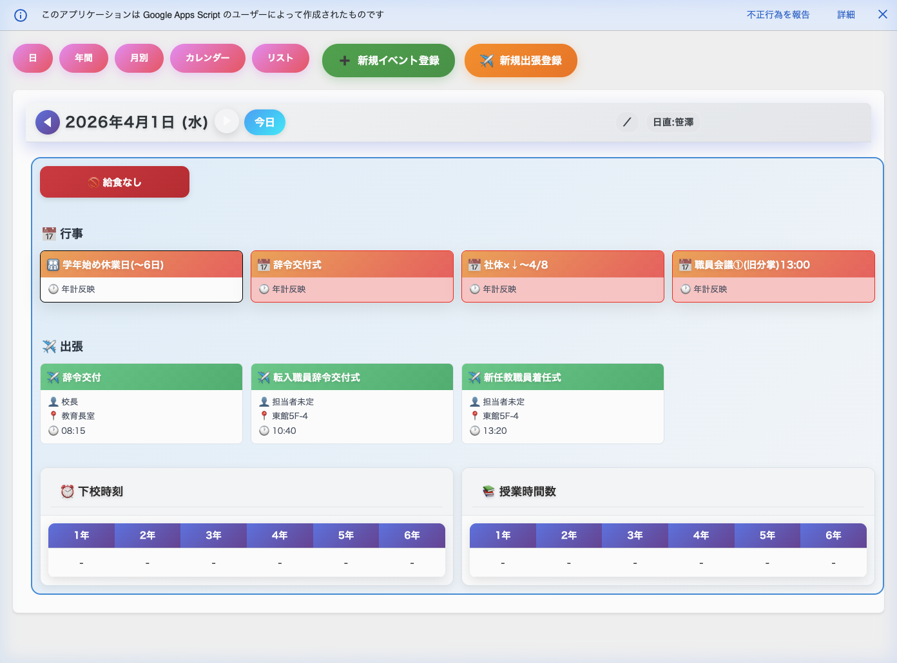
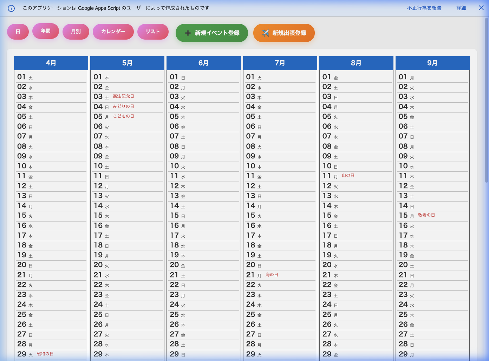
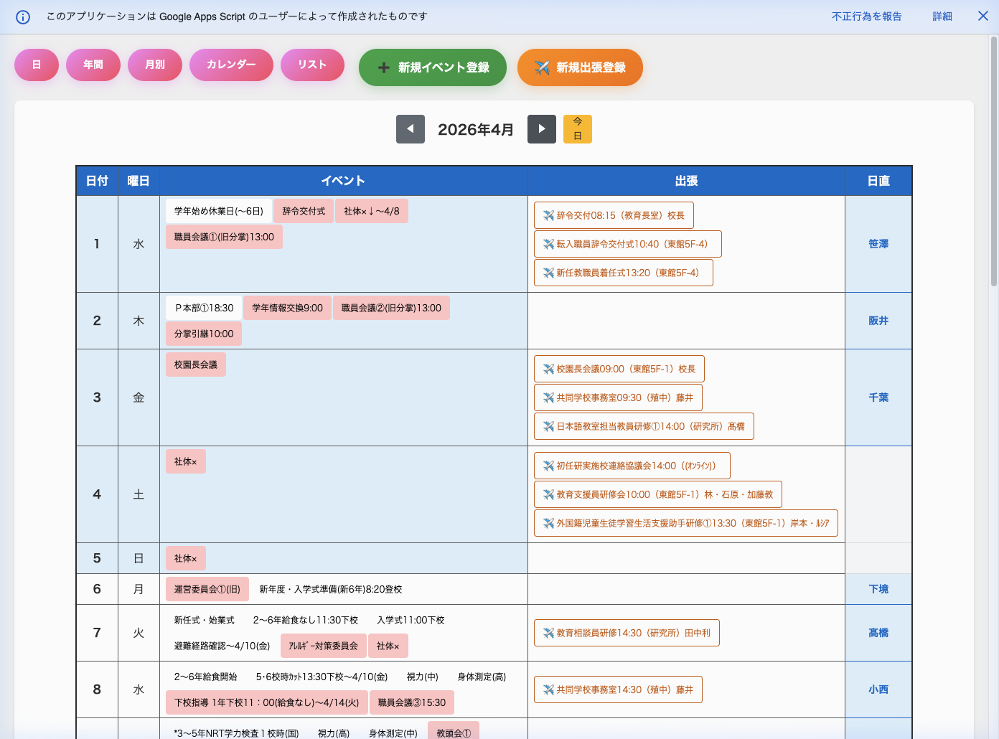
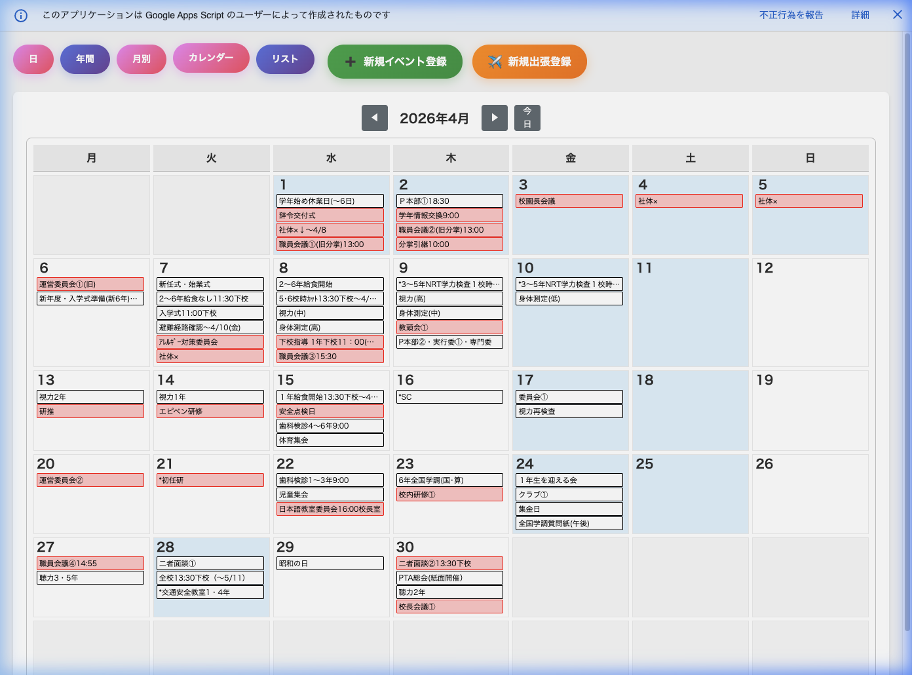
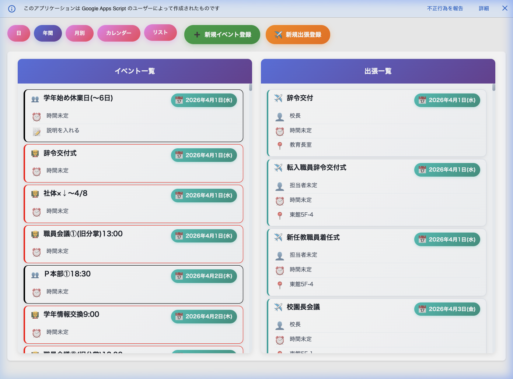

8. 5つの表示モード
Webアプリでは、予定の見かたを5つのモードから選べます。
画面上部のボタンをクリックすると、表示が切り替わります。
「日」ビュー（デイリービュー）
選んだ1日の詳しい情報をまとめて見ることができます。
アプリを開いたとき、最初に表示されるのがこのビューです。

日別ビュー：その日の行事、出張、下校時刻、授業時数などが一目でわかります
画面に表示される情報：
| 表示される内容 | 説明 |
|---|---|
| 今日の日付 | 画面上部に「○年○月○日（○曜日）」と大きく表示されます。 左右の矢印で前の日・次の日に移動できます。 |
| 給食 | 給食がある日は 🍽️ マーク、ない日は 🚫 マークが表示されます。 |
| 委員会・クラブ | その日に委員会やクラブがある場合、マークが表示されます。 |
| 朝の行事・午後の行事 | マスターシートに朝・午後の行事が登録されていれば表示されます。 |
| 学校行事 | その日に登録されている行事が、カード形式で表示されます。 クリックすると詳細が見られます。 |
| 出張 | その日に登録されている出張が表示されます。 出張者の名前・場所・時間がわかります。 |
| 下校時刻 | 1年生〜6年生の下校時刻が表で表示されます。 |
| 授業時間数 | 1年生〜6年生の授業時間数が表で表示されます。 |
| 日直 | その日の日直担当者の名前が表示されます。 |
行事や出張のカードに表示されるマークの意味：
| マーク | 意味 |
|---|---|
| 📅 | 通常の学校行事です |
| 👨👩👧👦 | 保護者向けの行事です（カードがピンク色になります） |
| ✈️ | 出張です |
| 📎 | 資料（Googleドライブのファイル）がリンクされています。クリックで開けます。 |
「年間」ビュー
4月〜翌年3月までの1年分を、一覧で見ることができます。
年間の予定を俯瞰して確認したいときに便利です。

年間ビュー：年度全体の流れを確認するのに最適です
| 表示される内容 | 説明 |
|---|---|
| 12か月分の一覧 | 4月〜9月と10月〜3月の2段で表示されます。 |
| 各日の行事名 | 日付の横に、その日の行事名が表示されます。 「年計反映」にチェックが入っている行事のみ表示されます。 |
| 祝日・休日 | マスターシートに登録されている休日が色分けで表示されます。 |
| 今日の日付 | 今日の日付は目立つ色で強調されます。 |
行事の「説明・備考」に入力した内容は、年間ビューには表示されません（月別ビューで確認できます）。
「月別」ビュー
1か月分の予定を表形式で見ることができます。
日付・曜日・行事が一行ずつ並ぶので、月の流れがわかりやすいです。

月別ビュー：学校の行事予定表（月行事）に近い形式です
| 列 | 内容 |
|---|---|
| 日付 | 日にちと曜日が表示されます |
| 行事 | その日の学校行事が表示されます |
| 詳細 | 行事の「説明・備考」に入力した内容が表示されます。 年間ビューには表示されない補足情報を、月別ビューで確認できます。 |
| 出張 | その日の出張が表示されます |
| 日直 | その日の日直担当者が表示されます |
左右の矢印で前の月・次の月に移動できます。「今日」ボタンで今月に戻れます。
「カレンダー」ビュー
壁掛けカレンダーのようなカレンダー形式で予定を見ることができます。
月曜日〜日曜日の列で、1か月分が格子状に表示されます。

カレンダービュー：視覚的に日程を把握しやすく、ドラッグでの移動も可能です
| 表示される内容 | 説明 |
|---|---|
| 各日のマス | 日にちと、その日の行事名が表示されます。 |
| 祝日・休日 | 休日は色が変わって表示されます。 |
| 今日の日付 | 今日のマスは目立つ色で強調されます。 |
左右の矢印で前の月・次の月に移動できます。
行事の日程変更を手軽に行いたいときに便利です。
「リスト」ビュー
登録されているすべての行事と出張を一覧表示します。
過去から未来まで、日付順にまとめて確認できます。

リストビュー：全ての登録データから目的の予定を素早く探せます
| セクション | 内容 |
|---|---|
| 行事一覧 | すべての学校行事が日付順に並びます |
| 出張一覧 | すべての出張が日付順に並びます |
各予定の横に表示されるマークの意味：
| マーク | 意味 |
|---|---|
| 🎯 | 今日の予定です |
| 📅 | 今後の予定です |
| 📆 | 過去の予定です |
表示モードの使い分け
| やりたいこと | おすすめのモード |
|---|---|
| 今日の予定をまとめて確認したい | 「日」ビュー |
| 来月の予定を確認したい | 「月別」ビュー |
| 年間の予定をざっと見たい | 「年間」ビュー |
| カレンダーで曜日と一緒に見たい | 「カレンダー」ビュー |
| 全ての予定から探したい | 「リスト」ビュー |
| 行事の日にちを変更したい | 「カレンダー」ビュー（ドラッグ&ドロップ） |